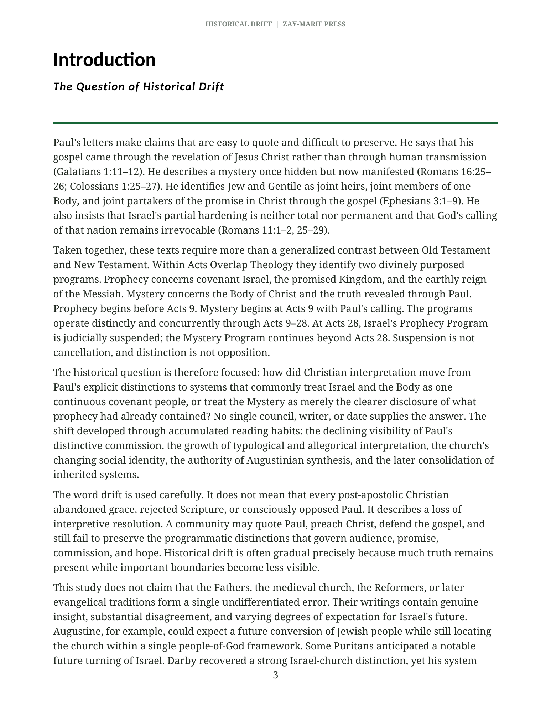
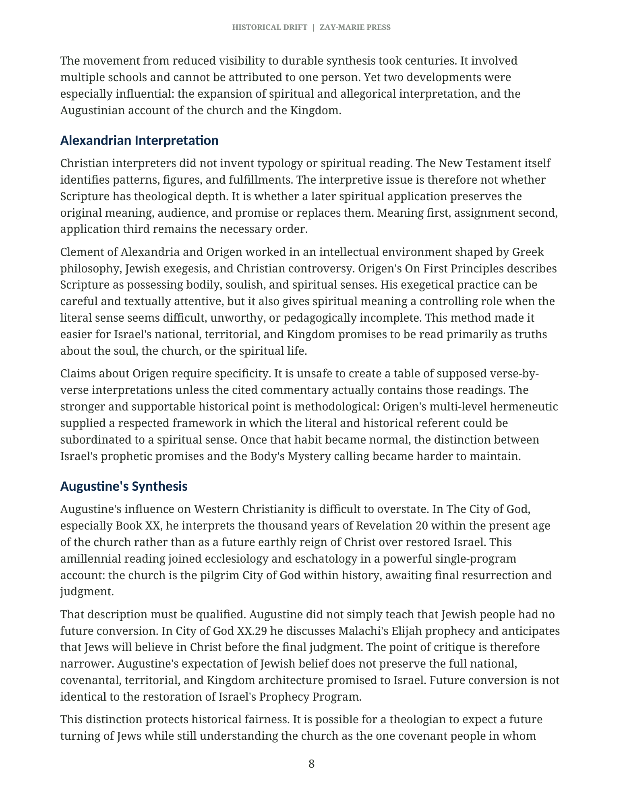
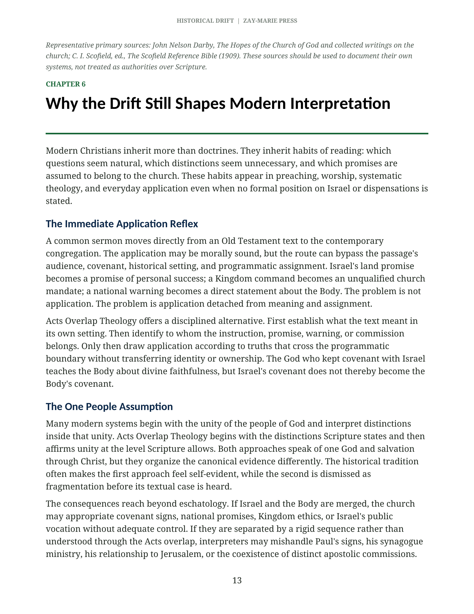
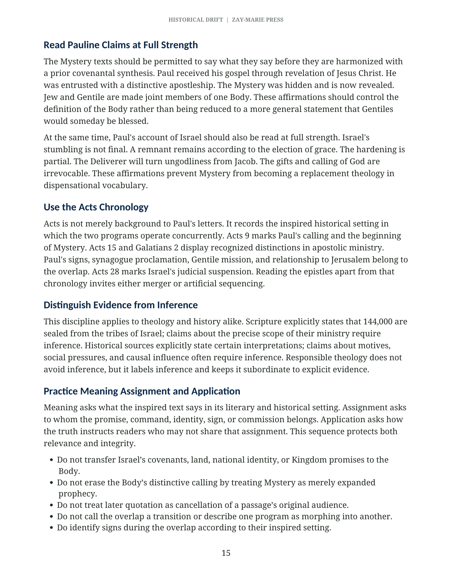

{kind=link}
Historically Careful
Distinguishes documented claims from inference and avoids making one writer or event responsible for the whole development.
How the Church Lost Sight of Pauline Distinctions
Trace how post-apostolic interpretation, spiritualized readings of Israel, Augustinian synthesis, Reformation inheritance, and later dispensational recovery shaped the church’s understanding of Israel, the Body of Christ, Prophecy, and the Mystery revealed through Paul.
Many readers know Paul’s words but have never been shown how inherited interpretive habits can obscure his distinctions. This monograph offers a historically careful introduction without treating church history as doctrinal authority. It separates explicit source evidence, responsible historical inference, and theological evaluation—then returns the final judgment to Scripture.
Distinguishes documented claims from inference and avoids making one writer or event responsible for the whole development.
Preserves Acts 9 as the beginning of Mystery, the Acts 9–28 overlap, Acts 28 suspension, and Israel’s future prophetic fulfillment.
Introduces the historical problem, then directs readers to the biblical studies that establish the framework passage by passage.

See how the study defines drift without turning church history into a simplistic story of conscious rejection.

Distinguish a future conversion of Jewish people from the full restoration of Israel’s national and covenantal program.

Identify the immediate-application reflex and the one-people assumption without reducing the discussion to personalities.

Return to full-strength Pauline claims, the Acts chronology, and the sequence meaning, assignment, application.
Historical Drift explains why Pauline distinctions became unfamiliar. The paid Digital Studies examine the controlling passages and doctrinal questions in focused depth, while the Biblical Hermeneutics Course builds a complete method for establishing meaning, assignment, and responsible application.
{kind=link}
{kind=link}
{kind=link}
{kind=link}